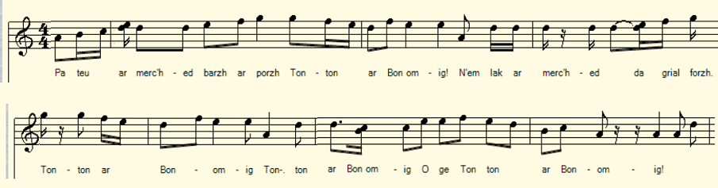
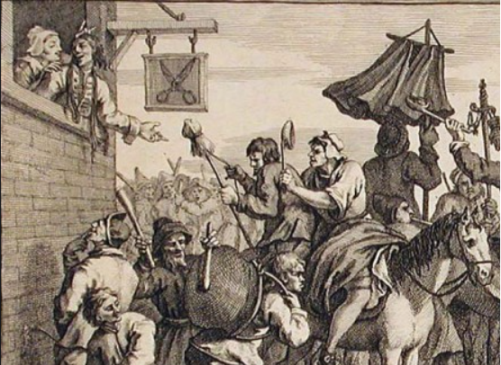

|
A propos de la mélodie Inconnue. Les strophes 10 et 11 indiquent clairement qu'on a affaire ici à un chant qui accompagne une danse. Ce "Plinn Ton-Simpl" emprunté au répertoire de Yann-Fañch Perroches épouse à peu-près le texte. A propos du texte Sur les feuillets supplémentaires du Carnet 2, numérotés 251 à 287 par le fils de La Villemarqué ont été notés les collectes de 1863-1864 ainsi que quelques chants recueillis plus tardivement: 1873, 1882 et le dernier, 23 mai 1892. La Villemarqué semble être le seul à avoir noté ce chant de charivari (cf. note 1). |
About the melody Unknown. Stanzas 10 and 11 clearly indicate that this a song accompanying a dance. This "Plinn Ton-Simpl" borrowed from the repertoire of Yann-Fañch Perroches roughly matches the text. About the lyrics .On the additional pages of Carnet 2, numbered 251 to 287 by the son of La Villemarqué, were noted songs collected in the years 1863-1864 as well as some songs collected later: 1873, 1882 and the last, May 23, 1892. Only La Villemarqué apparently seems to have recorded this hullabaloo song (cf. note 1). |
|
p. 258 1. Pa teu ar merc'hed barzh ar porzh, [1] Tonton ar Bonomig! N'em lak ar merc'hed da grial forzh: Tonton ar Bonomig, ge O! Tonton ar Bonomig! ____ 2. E dreid zo treuz en e voutoù, E zaoulagad zo louch o-daou. etc _____ 3. Fare drigon! drigon! tralala! Lez-tad da vont, mont brav a ra. _____ 4. Gwalc'het am-eus d'e(zh)añ ur roched E Poull-ar-Ran m'eus hen gwalc'het. 5. Er siminal m'eus hen serret. Dreist an armel m'eus hen gouarnet. = 6. Fare drigon ! drigon tralala ! Lez-tad da vont mont brav a ra. [2] _____ 7. Me 'm-eus un ti a vein gristal A zo warnañ triwec'h siminal (tourel). == 8. Triwec'h siminal (tour), triwec'h kan (gwele) Ha triwec'h oaled d'ober tan ___ 9. Ha triwec'h oaled d'ober tan Ur vagerez war pep unan : [3] = 10. Ha triwec'h kambr ha triwec'h sal Vit ar re yaouank da zañsal. = 11. Vit ar re yaouank da zañsal Ha d'ar re gozh d'ober ar bal . [3] KLT gant Christian Souchon (c) 2020 |
p. 258 1. Quand elles entrent dans la cour, Tonton le Bonhomme! Les femmes crient comme des sourds: O Tonton, le Bonhomme, O gai! Tonton le Bonhomme! ____ 2. Pieds de travers dans tes souliers, Tes yeux ne savent que loucher! _____ 3. Far drigon! drigon! tralala! Le beau parâtre que voilà! _____ 4. J'ai lavé l'un de ses bliauts A la Mare-aux Tétards tantôt. 5. Puis je l'ai dans l'âtre enfermé, Dessus l'armoire l'ai rangé. = 6. Far drigon! drigon! tralala! Le beau parâtre que voilà! _____ 7. Mon beau palais de cristal a Dix-huit cheminées (tourelles) sur son toit. == 8. Dix-huit cheminées et tuyaux (lits) Dix-huit foyers pour tenir chaud ___ 9. Dix-huit foyers et dix-huit feux Une nourrice à chacun d'eux: = 10. Dix-huit chambres, dix-huit salons Où les jeunes dansent en rond. = 11. Les vieux suivent tant bien que mal Car les jeunes mènent le bal. Traduction Christian Souchon (c) 2020 |
p. 258 1. As soon as they enter the yard, Ah! the wedding o't, ah! All girls and women cry: "Let's start!": Ah! the wedding o't, ah, ah! Ah! the wedding o't, ah! ____ 2. He's crooked-footed in his shoes, Squint-eyed on both sides in his views! _____ 3. Drigon! drigon! Stepfather fair, Tralala, who are coming there! _____ 4. I have washed his shirt in a pool Watched by a frog on a toadstool . 5. I kept it beside the fireplace, Then on a cupboard in a case. = 6. Drigon! drigon! Stepfather fair, Tralala, who are coming there! _____ 7. My crystal house, proud and aloof, Has eighteen chimneys (turrets) on its roof. == 8. Eighteen chimneys and eighteen pipes (beds) Eighteen hearths of various types ___ 9. Eighteen hearths and eighteen fires With near each of them a wetnurse: = 10. Eighteen bedrooms and drawing rooms A ballroom for young brides and grooms. = 11. Where greybeards will dance to the tune That young people will choose to croon. Translation: Christian Souchon (c) 2020 |
|
[1] Il serait vain de vouloir rattacher ce chant aux airs de "Bonomig" (Malrieu M-01031) qui raillent le vieil homme courant après un ancien soupirant à qui il a autrefois refusé la main de sa fille désormais en passe de devenir vieille-fille. En revanche, les premières strophes évoquent les charivaris que le Père Grégoire définit ainsi dans son dictionnaire: "Jilivari: Bruit confus avec des bassines etc. au sujet des gens âgés ou d'un âge fort inégal qui se marient" et il propose une étymologie pour le mot breton: " c'est-à-dire "Gilles et Marie". Il s'agit donc d'un air de "maumariée" d'un type particulier (cf. Ar boulom kozh). [2] La différence d'âge entre les époux est évoquée dans deux strophes comprenant une ligne d'onomatopées: le mari qui se pavane y est appelé "lez-tad", "parâtre". [3] Les chanteurs de charivari imaginent pour consoler la jeune mariée un palais de cristal où des nourrices s'occuperont des dix-huit enfants à venir et où l'on danse, mais ce sont les jeunes qui mènent le bal (dernière strophe). Comme le montre la gravure anglaise ci-après, la coutume du charivari n'était pas propre à la Basse-Bretagne. |
[1] It would be useless to try to link this song to the "Bonomig" songs (Malrieu M-01031) which mock the greybeard running after a former suitor to whom he once refused the hand of his daughter who is now turning into an old maid. On the other hand, the first stanzas evoke the hullabaloo that Father Grégoire defines as follows in his dictionary: "Jilivari: Confused noise with basins etc. made to mock elderly people, or people of very unequal age who marry" and he ventures an etymology for the Breton word: "that is to say" Jill and Mary " . This song is therefore a particular type of "maumariée" song (cf. Ar boulom kozh ). [2] The age difference between the spouses is hinted at in two stanzas beginning with a line of onomatopoeias where the proud old husband is called "lez-tad", "foster-father". [3] The hullabaloo singers imagine, to comfort the young bride, a crystal palace where nurses will take care of the eighteen children to come and where dances will take place, but young people who lead the ball (last stanza). As evidenced by the English engraving below, the hullabaloo custom was not peculiar to Lower Brittany. |
